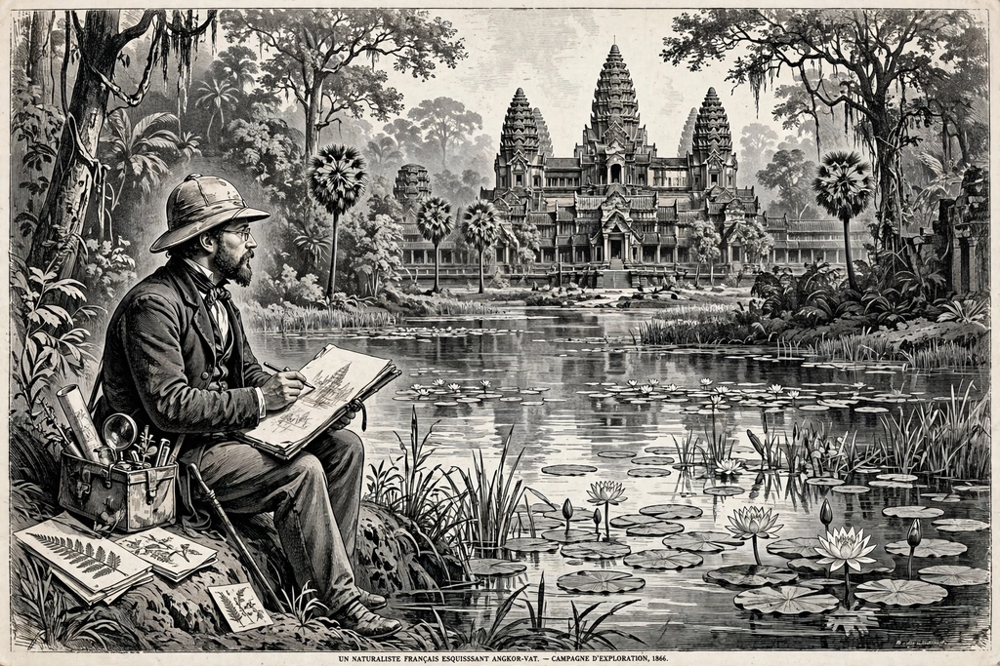

| Henri Mouhot | |
|---|---|
| Born | 15 May 1826, Montbéliard, France |
| Died | 10 November 1861 (aged 35), near Luang Prabang, Laos |
| Nationality | French |
| Occupation | Naturalist and explorer |
| Known for | Popularising Angkor in the West |

Alexandre Henri Mouhot (15 May 1826 – 10 November 1861) was a French naturalist and explorer who travelled extensively in Siam, Cambodia and Laos. Though not the first European to see Angkor — Portuguese missionaries and the French priest Charles-Émile Bouillevaux preceded him — Mouhot's vivid published accounts and drawings brought the ruined city to wide Western attention and helped inspire French involvement in Cambodia.
Born in Montbéliard near the Swiss border, Mouhot taught languages in Russia, travelled and sketched across Europe, and experimented with early photography. In 1857, inspired by reading about travels in Siam, he obtained backing from the Royal Geographical Society and the Zoological Society of London to collect natural-history specimens in Southeast Asia.
Based in Bangkok from 1858, Mouhot made four expeditions. He collected insects, shells and animal specimens along the Gulf of Siam coast and in the interior, and in early 1860 reached the ruins of Angkor, where he spent three weeks sketching and describing the temples. His famous account marvelled at a temple "equal to that of Solomon, erected by some Michael Angelo of antiquity," greater than anything left by Greece or Rome — praise that fixed Angkor in the European imagination. He also travelled among the Stieng peoples of the interior and along the Mekong.
On his fourth journey, in the jungles near Luang Prabang in Laos, Mouhot contracted fever (probably malaria) and died on 10 November 1861; his last journal entry asked, "Have I a second St. Paul's to fall back upon?" His servant buried him by the Nam Khan river, where a tomb was later erected. His journals and drawings were sent to England and published in 1864 as Travels in the Central Parts of Indo-China (Siam), Cambodia, and Laos, securing his posthumous fame. The zoological collections he sent home included many new species, several named after him, such as Mouhot's tarantula.